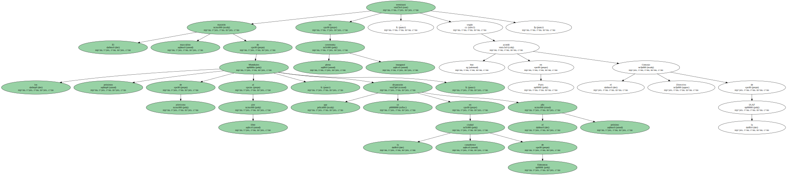
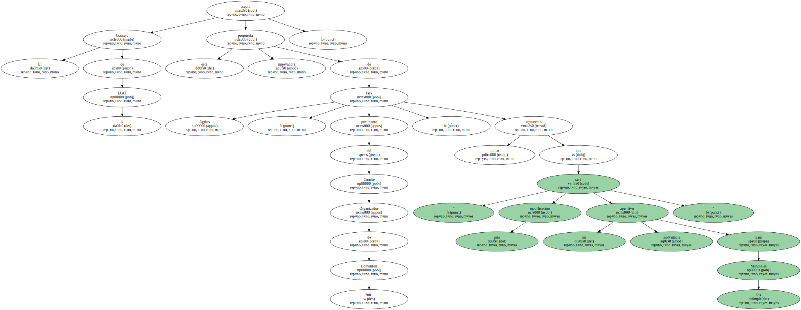
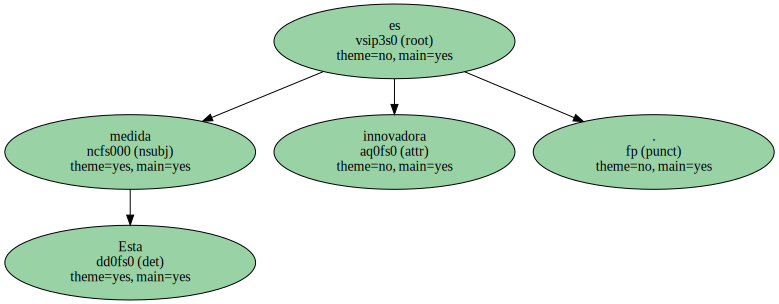
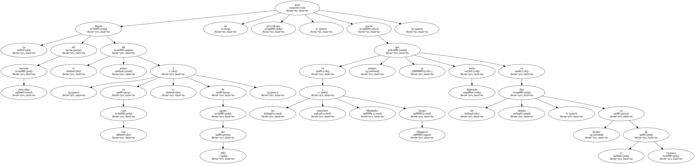

El maratón masculino de los próximos Mundiales de atletismo al aire libre , que se disputarán en la ciudad canadiense de Edmonton el próximo año , terminará en plena ceremonia inaugural , según acordó hoy en París el Consejo Directivo de la IAAF.
El Consejo de la IAAF aceptó esta innovadora propuesta de Jack Agrios , presidente del Comité Organizador de Edmonton 2001 , quien argumentó que " esta modificación será un aperitivo inolvidable para los Mundiales ".
" La intención es reconocer el gran prestigio que tiene la prueba de maratón y unirlo a la Ceremonia de Apertura con esta gran carrera . Queremos que los atletas salgan beneficiados , no sólo los espectadores y pretendemos que miles de personas apoyen a los corredores por la ruta y con ello el ambiente crezca para los siguientes días de los campeonatos " , afirmó el dirigente canadiense.

Esta medida es innovadora.
La disputa del maratón masculino el primer día - en este caso el 3 de agosto del 2001 - no tiene precedentes , puesto que en los anteriores Mundiales y Juegos Olímpicos siempre se había disputado en los últimos días , incluso en el de clausura.
